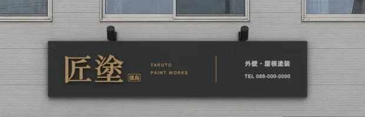

匠塗の看板 見た目案
事務所の写真に、Blender で作った看板を置いた見本です。写真も看板も架空です。


前の案から直したこと
- 何の店か分かるように、刷毛の絵と「外壁・屋根塗装」を社名とほぼ同じ大きさで入れた
- 文字と刷毛は生成りにした。描いた絵で文字と板の明るさの差を測ると、前の 4.5:1 から 6.6:1 に上がった
- 載せるのは刷毛・業種・社名・電話だけ。英字・徳島の印・区切りの線は外した。真鍮色は板の縁取りだけに残した
- 板を幅5.1m・高さ1mに広げ、壁の空いた帯をほぼ使い切った

このあと
- この看板でよければ、夕方に照明が点いた写真と、看板へ寄っていく短い動画を作ります